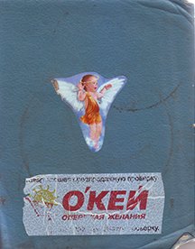
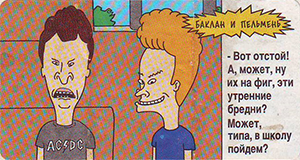
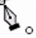
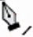
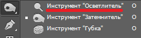
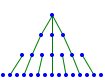

The Delphi Is Good...

0
Если при загрузке Windows нажмешь Shift то Автозагрузка не выполнится.
В системном каталоге винды лежат библиотеки, дрова, шрифты
Каталог
винды содержит приложения винды, файлы инициализации и файлы справок .hlp
FPS в QIII cg_drawfps 1
var
a: array[0..1] of byte;
b: word absolute a;
Константа и процедура могут иметь одно имя
  - Em пробел
67 стр - Protect, Privat
(a as TLabel).Caption:=TLabel(a).Caption
Нет плюса, кроме плюса, но C++ самый приплюснутый из плюсов.
Программист не знающий C подобен сосуду не имеющему дна (энштейн 1.5.02)
-Вот отстой! А, может, ну их на фиг, эти утренние бредни? Может, типа, в школу пойдем?
3
Нотепад++
20.05.2018
Документ отображается в кодировке macCirillic вместо Win1251
Чтобы исправить иди
[Опции->Настройки->Разное]
Авто-определение кодировки символов
5
Потоки Stream
#include
void main()
{
cout << "Welcome to C++\n";
}
Поток cin приносит символы с клавы
8
Объявление переменных
int the_data
тип переменной | имя
9
Классы и объекты
Если есть класс screenclass, то можно создать объект этого класса screen
screenclass screen
10
Объявление класса
#include <iostream.h>
class DataCL
{private: int privateDMember;
public:
int publicDMember;
int publicMetod(void);}
тип возвращаемого
имя метода входящие параметры
11
Модификатор доступа
Ключевое слово, которое определяет как можно пользоваться. Может быть трех типов
private - переенная класса является закрытой, с ней могут работать только обьекты этого класса
public - открытая переменная. Её можно обрращаться в любом месте проги
protected - ограниченный доступ. Юзать могут только обьекты этого класса, а также классов, производных от него
20
Изготовление окна, неубирающегося с экрана
Неплохо будет если форма
borderstyle=bsNone
color=clblack
windowState=wsMaximized
закрываемое только от Alt+f4
ещё ctrl+esc, Проект->закрыть
Alt+ctrl+del->завершить задачу
21
Формы Delphi 5
Описывается в свойстве form.borderstyle
bsSizeable - обычная
bsDialog - без изменения габаритов, только
_ _, без значка
bsNone - нет ничего! :-)
bsSingle - нет габаритов
bsSizeToolwin - только
_ _, нет значка
bsToolWindows - нет габариттов, в только
_ _, нет значка
22
Код проекта
Чтобы увидеть исходный код проекта надо сделать
View\ProjectSource
Сохранение проекта нажать
file>SaveAll
23
StringGrid
Свойства left, top задают положение на форме
height,width - габариты сетки в пикселях
fixedcols, fixedrows - число не прокручиваемых кнопок и рядов, не доступных для ввода данных
colcount, rowcount - габориты в ячейках
options.goEditing - дает возможности редактировать содержимое строки в ячейке
cells[acol,arav]: string - текст в ячейке
Суть в том,что в StringGrid нет места для хранения информации о цветах ячеек, он нужен как инструмент вывода матрицы, хранящейся отдельно
24
глюк:Делфи5 При компиляции проекта по клав F9 Без комментариев в наглую удаляет из моего листинга, из моего исходника, строки, которые ему не нравятся!
---
Отрисовка ячейки - 3
2018
procedure tform1.stringgroid1.draweCell(...)
begin
with stringgrid1 do
begin
canvas.brush.color:=a[acol,arow]
canvas.fillrect(rect);
end;
end;
где а - массив [5,5]of tcolor
Для закраски по массиву делай
stringGrid1.invalidate
это вызовет DraweCell
25
Отрисовка ячейки (цветной)
Юзается эвент в стринг гриде onDrawCell(!!!)
нет далее
см.52
procedure tform1.....
begin
with stringgrid1 do
if objects[acol,arow]<>nil then
begin
canvas.brush.color:=clred;
canvas.fillrect(rect); // закраска ячейки
end
end
26
Вставка Паскалевского Кода
Проходит хорошо. Херачим процедуру в implementation, после {$R*.DFM}
27
Преобразование типов переменных
Имеют место примеры
integer('A')
char(48)
boolean(0)
color(2)
longint(@buffer)
ord(true)
i:=integer('A')
Выражение, присваивает переменной i величину равную 65.
Еще можешь преобразовать числа в строки и обратно
s:=inttostr(a)
a:=strtoint(label1.caption);
Дает '0' или'1' из boolean в строку
s:=inttostr(word(b))
28
Ошибка readln
Когда Delphi встречает при выполнении оператор readln, то выдает:
Project gridell raised exception class EIno1tError with message 'i/o error 104'. Process stopped. Use Stop or Run to continue.
При этом выполнение (отладка) останавливается на строке исходника, вызвавшей ошибку. На нее указывает зеленая стрелка. При наведении на оператор курсора мыши всплывает подсказка
readln=Inaccessible value// недоступная
29
Координаты мыши
Ложим на форму 3 лейбла
События формы OnMouseMove
procedure ....
begin
label1.caption:='событие мыши -onMouseMove'
label2.caption:=inttostr(x);
label3.caption:=inttostr(y);
end
Глобальные
p:tpoint
getcursorpos(p);
Ещё дает глобальные
m: tmouse;
x:=m.cursorpos.x;
2013 год x:=Mouse.CursorPos;
30
Опрос клавы событиеми
OnKeyDown, OnKeyUp
Кладу на форму лабел, переименовываю его в В
в событиях формы - OnKeyDown
procedure tform1..OnKeyDown
begin
case key of
vk_left:b.left=b.left-1;
vk_right:b.left=b.left+1;
vk_up:b.top=b.top-1;
vk_down:b.top=b.top+1;
vk_escape: close;
end;
end;
Происходит движение лейбла по форме
vk_ - типа виртуальная клавиша
В этих событиях key|Word читает токо виртуальные коды клавишьб символы не читает
31
Чтение символа с клавы
Доступен токо с события OnKeyPress
Читает символ
Добавляю в предыдущий листинг
procedurte tform1.OnKeyPress(... var key: char);// В данном событии key - char
begin
b.caption:=key
end;
32
Иконка проекта
Project
ProjectOpnions->Application
Title
Help File
Browse
Icon
Load Icon
33
Цикл
for в Дельфе
Переменная юзаемая как счетчик цикла for не является переменной. Делфа не допускает каких либо манипуляций с переменной цикла, кроме чтения.
Команда
for i:=1 to 50 do i:=i+1
счиается не корректной
рекомендация юзать локальную i
34
2-я форма в приложении
В приложении может быть сколько угодно форм. Каждой форме соответствует unit.
Добавление формы в проект File|NewForm
По умолчанию все формы создаются автоматически при запуске проги. Одна из форм является главной
Главная имеет следующие отличия:
1) Получает управление при запуске проги
2) Закрытие её означает закрытие проги
3) Может быть невидимой, но если закрыты все остальные, то она становится видимой
Project|Options|Forms>Позволяет назначить Главную форму, Автоматически создаваемые и Доступные.
Если форма автоматически не создается, позаботьтесь о её создании - CreateForm
Событие OnCreate
Видимость формы: Show, ShowModal
Событие OnShow
Невидимость Hide, событие onHide
Закрытие - Close
35
Модальная форма
Она получает управление и не отдает его программе, пока не будет закрыта. Визуализируется методом ShowModal.
36
Пример модальной формы
Создаю форму 1. Ложу на неё батон 1
Создаю форму 2. Кладу на неё батон 1.
Раз первой я создал Form1, то она - Главная
Ей в implementation добавляю uses unit2;
События: на Form1.Button1Click:
Form2.ShowModal;
На Form2.Button2Click:
Form2.Close;
37
Переходы между формами
Создал две формы
В обеих в implementation добавил
в form1: uses unit2;
в form2: uses unit1;
Это типа чтоб они друг друга видели
Tform1.button1click=>form2.show;
tform2.button1click=>form2.close;
tform2.formCloseQuery=>form1.label1.caption:=form2.edit1.text
Это дает передачу параметра из form2 в form1
Для того чтоб проделать это с переменной её надо
сделать публичной
в form1 обьявить её в разделе public В этом случае она становится видна из Form2
---
boolean в строку true/false
result:=copy('FalseTrue',1+word(x)*5,5-word(x));
***
result:=string(pchar('False'#0'True'#0)+word(x)*6);
Odessit Vadim
---
Boolean в integer
ord(true)
---
Разрыв бесконечности
Application.ProcessMessages();
---
|
байт | б/знак | знаковая | действительное |
|
1 | byte | shortint | |
|
2 | word | smallint | |
|
4 | longword
Cardinal | integer
longint | single |
|
6 | | | real48 |
|
8 | | int64 | comp
real
double
currency |
|
10 | | | extended |
round(12.75)=13 // округление с плавающей запятой до целдого
trunc(12.75)=12 // целочисленная часть
int(12.75)=12 // тоже что trunc, но вещественное
frac(12.75)=0.75 // дробная часть числа с плавающей запятой
39
Типы данных Delphi 5.0
byte 1
word 2
set of char 32
set of byte 32
40
Работа с файлами
На форму memo1 и четыре батона.
Обозвать соответственно: assign,open,read,close
в implementation varы f1:text; s: string;
События при кликах:1) assignfile(f1,'e:\japan.jp');//ассигновать
2) reset(f1);
reset(f1,2);// открыть нетипиз, размер блока=2 байта
3) readln(f1,s);// чтение файла
memo1.lines[0]:=s+#13#10;
4)close(f1)//закрыть файл
Все почти как в паскале, токо chr значения идут через решетку
rewrite(f) - новый создать
erase(f) - удаление
41
file not found и др. i/o
Реакция на отсутствие файла
assignfile(f,n)// const n='1.txt'
{$I-}
reset(f);
{$I+}
if ioResult<>0 then begin
showmessage('file not '+n); halt(2)
end;
Или ещё вариант
try
picture.loadfromfile(n);//const n='1.txt'
except
on EIno1tError do showmessage('file not '+n);
end;
43
Для удобства открытия.сохранения файлов существует диалог OpenDialog
Для его вызова следует вызвать функцию OpenDialog1.Execute
Например r:=OpenDialog1.execute возвращает булеан открываемый файл или нет.
if OpenDialog1.Execute then begin
// операции с файлом
end;
Имя файла возвращается в OpenDialog1.FileName
44
Корни, log и ...
стр855
Корень извлекается квадратный sqrt
sqr - возедение в квадрат
sqrt - квадр корень
логарифмы
ln - натуральный, основание e
log2 - двоичный
log10 - десятичный
Qiller exp(1/3.0*ln(x)) // работает руль!
y:=exp(1/3.0*ln(x))
IntPower
Power(x,e)//x: real// возводит х в произвольную степень Е (uses math)
write(x:4:2)// 4-?,2- знаков после запятой
10^27=exp(27*ln(10))
---
Возведение в степень заменили на exp(y*ln(x))
function Power:extended
function IntPower;extended// в целочисленную степень
без разницы отрицательные и положительные основания степени
корень третьей степени из х=х в степени одна третья
---
Экспотенциальная запись - представление действительных чисел в виде мантиссы и порядка
N=M*nP
мантисса
основание показательной функции
порядок
характеристика числа
1,0*10^-6
Компьютерный способ экспоненой записи
1,602E-19
мантисса
E(exponent) означающая "умножить на десять в степени"
порядок
* Мантисса - дробная часть логарифма
45
Animate
Компонент из библиотеки win32/
Помимо прочего avi воспроизводит клипы виндовс. Всего 8 штук. Расположены хранятся в Shell32.dll
Каждый от 8 до 38 кадров
Activate:=true
CommonAVI:=avi.RecicleFile
FileName=..\Demos\Coolstuf\cool.avi
46
Диалоговое окно MessageDlgPos
Форма, кнопка. Событие onClick кнопки.
if MessageDlgPos('continue?', mtCustom, mbOKCancel, 0, 200,200)=mrOK then beep;
выводит на экран окно
типы окна: mtWarning, mtError, mtInformation,mtConfirmation, mtCustom
Возвращаемые величины
mrNone
mrAbort
mrYes
mrOK
mrRetry
mrNo
mrCancel
mrIgnore
mrAll
47
ShowMessage -простой аналог MessageDlgPos
unit: Dialogs
ShowMessage('Привет!');
InputBox - маленький диалог для ввода строки
Проверка четности введенного числа
if odd(strtoint(inputbox('Test','Enter Chislo: ','0')))then showmessage('не четное')
102
---
MessageBox
MessageBox(0,pchar(s),'all right=)',MB_ICONEXELAMATION+MB_OK);
со звуком
51
StatusBar
На форме размещается в низу окна
Свойство SimplePanel=false
Panels - задает текст в каждой панели и их число
52
Отрисовка ячейки - 2
procedure полнейшая ахинея
***
Кадастровый номер 1
from866, Перекодирует текстовые файлы из cp866 в Windows-1251 дата 4 февр 2015

53
обращение к ячейке sg строковой
label1.caption:=sg1.Cols[0].Strings[0];
54
Еще один глюк Delphi. Вместо объекта создается указатель!
56
Create !!:-)
На форму panel1, кнопку
implementation
{$R *.DFM}
var w: array[1..80,1..80]of Tpanel; // Vcl.ExtCtrls
procedure TForm1.Button1Click(Sender: TObject);
var x,y : integer;
begin
for y:=1 to 70 do
for x:=1 to 50 do begin
w[x,y]:=TPanel.Create(self);
w[x,y].Parent:=self;
w[x,y].Top:=10*x;
w[x,y].Left:=10*x;
w[x,y].Width:=8;
w[x,y].Height:=8;
end;
end;
Работает очень медленно и не все квадраты рисует
57
4сент02 Экспеременнтирую с установкой новой библиотеки DelphiX
Распаковал в DelphiX папку, запустил DelphiX\bin\instal_for5.exe
Пишет установлено complete
Лезу в Дельфу Ура! Появилась новая библиотека!
7сент02 Пробую сделать чтото MOORHUHN
За основу попр взять DelphiX\Samples\Sprite\Base "серые шары"
Имеем 2 вида спрайтов. Нехитрый фон.
59
Встронный граф редактор Delphi
Tool>ImageEditor
Alt+PrintScreen дает захват в буфер активного окна!
69
Каждому компоненту отдельный юнит
70
EnableWindow
Жесткий прикол. Комп перестает реагировать на клаву и мышь!
OnCreate формы помещаем
EnableWindow(GetDesktopWindow(),false);
Кстати при работе в Мирке аналогичный эффект достигается вводом команды
/write aux
Как узнать разрешение экрана? Координаты окна?
screen.width form1.top
78
Графика
procedure Tform1.FormPaint
var x,y: integer;
begin
x:=-300;
while x<300 do begin
y:=round(0.4*x);
if ((x>-300)and(x<300))and
((y>-200)and(y<200)) then
canvas.pixels[300+x,200-y];
x:=x+1;
end; {while}
end;{proc}
----
24.03.2017
b это TBitmap
b.Transparent:=true
b.TransparentMode:=tmFixed
b.TransparentColor:=clRed
канва img.drdaw(0,0,b)
- - -
если TransparentMode:=tmAuto то цвет берется из углового пикселя
- - -
FloodFill
Brush.color:=clwhite ///краска
FloodFill(1,1,clred,fsSurface);// уничтожить цвет
FloodFill(1,1,clred,fsBorder);// стоп-цвет
- - -
Canvas.draw(0,0,b) где b: tbitmap-есть транспарент
b.assign(image1.Picture);
image2.picture.loadfromFile(s); где s имя файла
image1.canvas.copyMode:=cmSrcCopy;
image1.canvas.copyRect(rect(0,0,200,200), image2.canvas,rect(0,0,200,200));
CopyRect(R,bt.canvas,r0) где R,R0: TRect
bitmap.TransParentColor:=clRed
BitBlt(b.canvas.handle,0,0,100,100,b.canvas.handle,0,0,SRCCOPY);// куда|откуда
где DC:HDC;
DC:=getDC(0);
b.loadfromfile('c:\v.bmp');
canvas.handle
i.picture/bitmap.handle
после создания bitmap надо дать ему размер
- - -
image1.picture.bitmap.assign(image2.picture)
image1.picture.assign(image2.picture)
image1.picture.graphic:=b
Canvas.StretchDraw + c CopyMode
вписывает каринку в прямоугольник
cliprect
- - -
| ЗагрузИз
| file | canvas | b2 |
|
tbitmap | loadfromfile() | b.assign(i.picture) | b2.canvas.draw(0,0,b) |
|
i.canvas | | i2.canvas.cliprect(rect(0,0,1,1),i.canvas.rect(0,0,2,2)) | i.canvas.draw(0,0,b) |
|
i.picture | i.picture.loadfromfile | bitblt(DestDC:HDC; x: integer;y: integer;width: integer; height: integer;SrcDC:HDC; xsrc: integer;ysrc: integer; Rop: Cardinal) | |
79
Некоторые свойства в DelphiX
DXTimer.Framerate - фпс
DXSpriteEngine.Engine.AllCount - все спрайты integer
DXSpriteEngine.Engine.DrawCount - сейчас отрисовываются
удерживание в центре зкрана скроллинг
Engine.X:=-x+Engine.Width div 2-width div 2;
Engine.Y:=-y+Engine.Height div 2-Height div 2;
DXDraw.Surface.Canvas - канвас
80
вывод fps
with DXDraw.Surface.Canvas do
begin
brush.style:=bsClear;
font.color:=clWhite;
font.size:=12;
textout(0,0,'FPS:'+inttostr(DXTimer.Framerate));
release
end;
API - Application Programing Interface
RFC - editor.org
83
NoScroll
#K$+
Текст
Notepad(txt)Word(rtf)hcrtf(hpj,файл проекта).(hlp)
# имя темы
K
$
+ номер темы
84
Перемещение в z-последовательности
Edit>Bring to Front
Edit>Send to Back
Также доступно в пр.щелчке мышью
Для тех, у кого есть parent
85
Нечетность
odd(x): boolean;
87
Owner,Sender,Self,Parent
tform1.form.create(sender:tobject);
--owner=TComponent
--sender=TObject
--self=TForm1
--parent=TWinControl
88
MASM32
вызовы api функций. 2 способа
jmp @F
szDlgTitle db "Minimum MASM",0
szMsg db "Ajhlku",0
@@:
push MB_OK
push offset szDlgTitle
Push offset szMsg
push 0
call MessageBox
push 0
call ExitProcess
аналогично
invoke MessageBox,0,ADDR szMsg, ADDR szDlgTitle,MB_OK
invoke ExitProcess,0
89
Делфи. Запись в реестр для автостарта проги
uses Registry;
procedure tform1FormCreate
var reg:tregistry
begin
reg:=tregistry.create
reg.rootkey:=HKEY_LOCAL_MACHINE
reg.lazywrite:=false;
reg.openkey('software\microsoft\windows\currentversion\run',false);
reg.writestring('learn',Application.exename);
reg.closekey;
reg.free;
end;
Пишет саму себя в реестр в ключ с названием learn. Если для работы проги необходим какой нить файл прога его ненайдет. Юзаю: memo1.lines.loadfromfile(exractfilepath(pplication.exename)+'\'+'dic.txt');
90
Запуск IExplrera и открытие в нем инет страницы
uses ShellAPI
procedure Tform1.buttonClick
begin
shellexecute(form1.handle,'open','www.aist.net.ru',0,0,sw_maximize);
end;
или:
WinExec('c:/mine.exe',sw_restore);
/yandsearch?rpt= ?text=
см стр. 150
-----
WinExec выключение компа
2,1,19
WinExec('shutdown -s',sw_show);
------
Запуск прог с помощью Ява скриптов
Для этого нгеобходим файл в системе wscript.exe. Обычно лежит windows\system32
Создаю с пощью блокнота файл .js
var w=WScript.CreateObject("WScript.Shell");
w.Run("winmine",1)
//имя айла, видимое
Создаю a.bat файл
wscript %1
//имя с путем
Перетаскиваю a.js на a.bat. Запустился сапер!
По дефолту js зарезервировано за макромедиафлеш
2017 не смог
91
Незакрываемое окно Делфи
Заставить окно обрабатывать мессагу
type
tform1=class
- -
private
procedure wmclose(var i: integer); message wm_close;
- -
implementation
procedure tform1.wmclose(var i: integer);
begin
showmessage('no');
exit;
inherited;
end;
см.
стр 121а
окошко не возможно закрыть:-)
93
MSScanDisk
Код типа ностиеля // быстро
Таблицы размещения файла
Структура папок - несколько 10-в минут
Файловая система - Десять минут
Скурпулезно проверяет весь диск, на который ей предлагает установиться
67% - зависла
Пропуск - работает!
95
Убрать из загрузочного меню МЕ выбор 2000
в файл BOOT.INI
было:
timeout=30
default=mult(0)disk(0)rdisk(0)partition(1)\WINNT
[OPERATION SYSTEMS]
multi(0)disk(0)rdisk(0)partition(1)\winnt="MS W2000 Pro" /fastdetect
C:\"MS WINDOWS"
Стало:
timeout=0
default=C:\
далее без изменений
96
Создание случая
var v:TRadiobutton
procedure Form Create
v:=TRadiobutton.Create(self); // создание
v.parent:=self// визуализация
v.free// убить
----
Держим min размеры окна
private
procedure wm(var x: TWMGetMinMaxInfo); message WM_GETMINMAXINFO
procedure tform1.wm(var x: TWMGetMinMaxInfo);
begin
with x.MinMaxInfo^.ptMinTrackSize do
begin
x:=705; y:=410;
end
inherited
end;
----
Описание
36 WM_GETMINMAXINFO 0024
имя, тип// lparam - (LPMINMAXINFO) lparam
В свойствах формы можно сделать фиксированный размер
---с
TB_GETITEMRECT 1053
На формуу Toolbar, на него 3 кнопки(BitBtn,SpeedButton,Button)
uses commctrl
var r: trect;
y:=toolbar1.Perform(TB_GETITEMRECT,0,integer(@r))
если y<0, то функция вернула результат
Получает rect итема Toolbar
Описание
TB_GETITEMRECT
wParam=(WPARAM) iButton
lParam=(LPARAM)(LPRECT) lprc// тип, имя
-----e
Мессага Виндовс все они пронумерованы, номера в файле message.pas
sizeof(tmessage)=16
кому:4 байт
...:4
wp:4
lp:4
Источниками мессаг являются события прерывания. Напр: модем, юзер,стучащим по клаве, движения мыши. Принимать мессагу может любой TWinControl. Программно послать мессагу тоже можно
1)form1.Perform(WM_CLOSE,0,0)
2)SendMessage(form1.handle,WM_CLOSE,0,0)
3)PostMessage(form1.handle,WM_CLOSE,0,0)
Поставить свой обработчик в окне в type
private
procedure m(var i: integer); message WM_CLOSE;
procedure tform1.m(var i:integer);
begin end; // хуй закроешь
procedure tform1.m(var i:integer);
begin inherited end; // добавил одно слово и закроешь
----f
Создание своего сообщения в проге
const wm_hi=wm_user;
type// первое свободное в системе
private // обьявляю
procedure k(var i: integer); message wm_hi;
proceure tform1.k(var i: integer);// код
begin showmessage('приветик!') end;
procedure tform1.formclick(sender:object);// пример юзания
begin sendmessage(form1.handle,WM_HI,0,0) end;
----i
Сообщения Виндовс
WM_LBUTTONDOWN - мышь
WM_CLOSE - окно
TB_GETSTATE - тулбар
BM_SETSTATE - кнопка
97
Отправляет сообщение(?) кнопке
Тпа программногго нажатия
Нажать
button1.Perform(BM_SETSTATE,1,0)
Отжать
button1.Perform(BM_SETSTATE,0,0)
Проверить
i:=button1.Perform(BM_GETSTATE,0,0)
---
var a: array[0..255] of byte
y: integer
y:=form1/Perform(WM_GETTEXT,255,integer(@a)) // получаем текст окна
Получает rect итема Toolbar
uses commctrl
var r: trect
y:=toolbar1.Perform(TB_GETITEMRECT,0,integer(@r))
98
Родственные связи окна
procedure tform1.timer1timer(sender)
var p: tpoint; h,j: hwnd;
t,r: longword;
begin
getcursorpos(p);
h:=windowfrompoint(p);// хендл окна
flashwindow(h,true);
j:=getwindowTreadProcessID(h,@r);
label1.caption:='Ручка окна'+format('%x',[h]);
label2.caption:='Собственник'+format('%x',[j]);
label3.caption:='Нитка'+format('%x',[t]);
label4.caption:='Процесс, Поток'+format('%x',[r]);
end;
Окно под курсором начинает мигать. В лейблах отбражается инфа о нем
//ручка окна под курсором
OnTimer var p: tpoint
getcursorpos(p)
label1.caption:=inttohex(windowfrompoint(p),8)
-----
Хендл и класс окна
var p:tpoint;
h: hwnd;// ручка
b: pchar;// класс
getcursorpos(p)
h:=windowfrompoint(p)
memo1.clear
memo1.lines.add(inttohex(h,8))
getmem(b,255)
try
if getclassname(h,b,255)>0 then memo1.lines.add(b)
finally
freemem(b,sizeof(b^));
end
99
Перебор всех файлов. Поиск файла
var sr:TSearchRec;// вся инфа о файле идет сюда
begin
if findfirst("c:/*.*",faAnyFile,sr)=0 then begin
memo1.lines.add(sr.name)
end;
while findnext(sr)=0 do begin
memo1.lines.add(sr.name);
end;
findclose(sr);
100
Существование директории
var s: tsearchrec;
result:=findfirst(x,faDirectory,s)=0;
findclose(s);
101
Создание файла размером 90 Кб
Создание файла размером 2 Гб
var s: text;
procedure tform1.formCreate(sender)
var i: integer;
begin
assignfile(s,'bigfile.txt');
rewrite(s);
for i:=0 to high(integer) do write(s,'p');
closefile(s)
end;
end;
102
Пример описания структуры
typedef struct
{
DWORD ckid; // типы
DWORD cksize;
BYTE ckDATA[cksize]; // тип , массив
}
--------b
Вызов закрытых методов
У тбаттона есть protected метод CreateWnd. Для вызова
a:=class(TButton) end;
где-то в коде
a(button1).CreateWnd;
103
Выкидываемся из таскбара
SetWindowLong(Application.Handle,
GWL_EXSTYLE,
GETWINDOWLONG(Application.Handle,GWL_EXSTYLE)OR WS_EX_TOOLWINDOW AND NOT WS_EX_APPWINDOW);
104
Прячемся в списке процессов
type
T=function(dwProcessID,dwType:DWord): DWORD; stdcall;
var i:T;
h: hinstance;
begin
h:=loadlibrary('KERNEL32.DLL');
i:=GetProcAddress(h,'RegisterServiceProcess');
i(GetCurrentProcessID,1);
freeLibrary(h)
end;
105
Барабан
var f: procedure(x,y: double);
@f:=getProcAddress(hDll,'some');
f(3,4);
или так:
var f: procedure
@f:=@t;
f;
107
Время
Эксперименты
Кинь на форму Edit, в варах обьяви t: tdatetime
В procedure tform1.formShow
begin
edit1.text:=floattostr(date);
end
Дает: 37655
---
Год: FormatDateTime('YYYY',now)
109
Сообщения Windows
Представляет собой структуру 16 байт?
кому: 4
№ мессаги 4
wParam word 4
lParam - longint 4
Получать мессаги может любой потомок класса TWinControl. Получатель идентифицируется handler`ом
110
dll для хука (стандартная установка)
library dll;
uses shellapi, sysutils,windows;
function a(n: integer; w: wparam; l: lparam):lparam; stdcall;// стандартные соглашения
begin
result:=l
end;
exports
a;
end.
New->dll
Набить код
Save Project As... дать имя которое будет у dll
Project-Build
*Для юзания dll должна лежать там же, где прога
111
Установка hook
unit unit1;
var h: hinst;
k: TFNHookProc;
begin
h:=loadlibrary('dll.dll');// ручка dll
k:=GetProcAddress(h,'a');// имя функции , far указатель
SetWindowsHookEx(WH_KEYBOARD,k,h,0)// тип хука
end
112
Туже dll функцию использую как обычную
unit unit2;
обьявление
function a(n: integer; w: wparam; l: lparam): lparam far; external 'flint';
использование
var i: lparam;
begin
i:=a(0,0,0)
end;
Всегда дает ошибку Accesss Violation
-----
library project
uses windows,sysutils,classes;
var d: hhook
function a(n: integer,w: wparam;l: lparam): lparam; stdcall;
begin
result=callnextEx(d,n,w,l)
end;
procedure hook(x: boolean); export
begin
case x of
true: d=setWindowsHookEx(WH_KEYBOARD,a,hinstance,0);
false: unHookWindowsHookEx(d)
end
end
exports a, hook;
end;
------
Юзание dll-функции
procedure a; external 'project2.dll'; // имя либы
begin
a
end;
*****
в dll
uses dialogs
procedure a;
begin
showmessage('работает!')
end;
exports a;
----e
Хук без DLL
Пасет клаву, в мемо1 пишет нажатую клавишу
var h: hhook;
хук
function a(c: integer; w:wparam; l: lparam): longint; stdcall;
var s: string;
begin
s:=chr(w)
setwindowtext(form1.memo1.handle,pchar(s));
result:=callnexthookex(h,c,w,l);
end
установка хука
h:=setwindowshookEx(WH_KEYBOARD,@a,hinstance,0);
снятие хука
if h<>0 then unhookWindowsHookEx(h);
-----f
Паскаль. Представление числа в 16-ной форме (HEX)
Function hex(x: word): string
const a: string=('0123456789ABCDEF');
begin
if x<256 then
hex:=a[(x shr 4)and $f+1]+a[x and $f+1]
else
hex:=hex(x shr 4)+a[(x and $f)+1];
end;
113
Отображение 10-чисел как 16-чисел
label1.caption:=inttohex(h,4)// число, колво hex знаков
а обратно? строка -> число
S:='$cc';
i:=strtoint(s);
кстати (2016)
i: integer;
i:=$;// аналогично i:=0
114
Открытие пароля под звездочками
! работает только в dll
Напритмер на таймере такой код
getcursorpos(p)
h:=windowfrompoint(p);
SendMessage(h,EM_SETPASSWORDCHAR,0,0);
где h:=hwnd; p: tpoint
Видно будет при перерисовке окна
InvalidateRect(h,nil,true)
Фленов Библия Дельфи Хакера глава 3
115
Печать hwnd в label.caption
label1.caption:='h:'+inttostr(h,4)
116
Установка фокуса
button1.Setfocus-установка
button1.focused - проверка фокуса
ActiveControl:=nil
ActiveControl:=button1
OnEnter - событие получения фокуса
117
Переводит константу в число
map <string, double>
118
множество Фонт Синтаксис
толстый подчеркнутый
button1.font.style:=[fsBold]+[fsUnderline];
font.style:=font.style-[fsBold];
---
procedure tform1.FormKeydown(sender....)
if ssleft in shift then
type p:=record k,s: integer end
var a: array[1..2] of p=((k:0;s:0),(k:0;s:0));
2016
font.style:=[fsBold,fsUnderline]
2019 CSS
text-decoration: underline;/*подчеркнутый*/
font-weight: bold;/*жирный*/
119
Тремор курсора мыши
в таймере
var p: tpoint
begin
randomize;
getcursorpos(p);
setcursorpos(p.x+2-random(5),p.y+2-random(5))
end;
120
округление real
В 3d графе часто юзаются cos и др. sin
при этом cos(pi/2)=6.230E-17 (не 0)
Для округления до нуля юзаю функцию
function tform.okrug(r: real): real;
var f: real;
begin
f:=int(Exp(4*ln(10)));// округляет до четырех знаков
result:=round(f*r)/f;
end;
юзание
b:=okrug(cos(p/2))
function okrug100(r: single): single;
begin
result:=100*r/100
end;
121
Градусы в радианы
deg:=rad*180/pi
rad:=deg/180*pi
в модуле math есть также
RadToDeg
DegToRad
---------а
обработчик мессаги
в обьявлении формы
в классе public
procedure u(var x: tmessage);
message WM_KEYDOWN;
В implementation
procedure tform1.u(var x: tmessage);
begin
close
end
Результат: При нажати любой клавиши закрывается прога
WM_CLICK - НЕТ такого, зато есть UP, DOWN, CLOSE
(WM_BUTTONDBLCLK)
см
стр 121-d
см
стр 91
-------------
обработчик мессаги 2017(пришлось наследовать)
в классе новом кнопочном
tfo=class(tbutton)
procedure wmd(var msg: twmmouse) message WM_LBUTTONDOWN;
end;
var b: tfo;
implementation
procedure tfo.wmd(var msg: twmmouse);
begin
messageDlg('Да',mtinformation,[mbOK],0)
end;
в create формы
d:=tfo.create(form1);
with b do
begin
parent:=form1;
width:=30;height:=40;
top:=50; left:=10;
caption:='B';
end
В дестрой формы
b.free
Дает сообщение по нажатии кнопки
----------------с
Borland\Delphi\Source\Rtl\Win\messages.pas
строка 907 описание записи
TWMMouse=packed record
Msg: Cardinal;
keys: longint;
case integer of
0:(
xpos: smallint;
ypos: smallint);
1:(
pos: Tsmallpoint;
result: longint);
end;
-----------------d
обработчик мессаги 2017(закрытие окна по двойному щелчку)
в классе формы
public
procedure m(var x: TWMMouse); message WM_LBUTTONDBLCLK;
в имплементации
procedure tform1.m(var x:TWMMouse)
begin
close
end;
--------------e
обработчик мессаги
маус мув и маус даун, вывод на лейбл
в паблик формы:
procedure m(var x:TWMMouse); message WM_MOUSEMOVE;
procedure k(var x:TWMMouse); message WM_LBUTTONDOWN;
в имплементации
procedure tform1.m();
begin
label1.caption:=format('%d %d',[x.xpos,x.ypos]);
end;
procedure tform1.k();
begin
label2.caption:=format('%d %d',[x.xpos,x.ypos]);
end;
вызов так
form1.perform(WM_MOUSEMOVE,0,makeLparam(3,3));//x,y
----------------f
обработчик мессаги 2017
Двойной щелчек передается как маусдаун кнопке
класс кнопки
type tfo=class(tbutton)
procedure f(var x: TWMLBUTTONDBLCLK);
message WM_LBUTTONDBLCLK;
end;
в implementation
procedure tfo.f(var x: TWMLBUTTONDBLCLK)
begin
perform(WM_LBUTTONDOWN,x.key,longint(x.pos));
end;
122
Смена обработчика на лету
В обьбявлении формы
public
procedure u(sender: tobject)
в имплементации
procedure tform1.u;
begin
close
end;
где-то в коде...
button1.onClick:=u;
Результат. При нажатии баттон1 вызывается процедура u
123
Форма с кнопкой, создается разработкой
форма-2 с кнопкой делается программно
закрыть форму-2
OnClick - создать форму-2 с кнопкой. Показать модально
124
DLL
library mydll;
uses SysUtils, Classes;
function a1: int64;
begin
result:=5412l;
end;
function a2: int64;
begin
result:=9890;
end;
exports
a1,a2;
end.
file-new-dll
Save Project As... mydll
Proect-Build mydll
125
Юзание DLL
function a1: int64; stdcall; extend 'MyDll'
var form1: tform1;
implementation
procedure TForm1FormCreate(sender)
begin
form1.caption:=inttostr(a1)+''+inttostr(a2);
end
DLL которую можно регить называется COM-сервер.
подробнее см стр 146
126
Ресурс BMP
Кладу файл brcc32.exe в корне диска c: делаю файл mywave.rc
mywave2 BITMAP LOADONCALL prev.bmp
Компилю его перетащив на brcc32.exe. Получается mywave.res
В проект добавляю строку
{$R mywave.RES}
Загрузки в имедж картинки
image1.picture.bitmap.loadfromResourceName(hInstance,'mywave2');
аналог getModuleHandle
-------в
TControl(Sender).tag:=0
TWinControl
form1.ControlCount колво контролов
TEdit(form1.Controls[i]).text
if (Sender is TEdit) then
tag:=longint(form1.Controls[i]) поинтер засунул в тег
TCheckBox(ptr(TMenuItem(Sender).tag)).Checked юзание этого поинтера pointer
(Sender as TImage).tag:=0
127
Обращение к компонентам через индекс
Присваивает значение всем лейблам
for i:=1 to 5 do
TLabel(FindComponent('label'+inttostr(i))).caption:="1";
for i:=1 to 5 do
(FindComponent(Format('label%d',[i]))as TLabel).caption:="1";
TLabel(label1).Caption:="1"// обращение через имя
for i:=0 to ControlCount-1 do
if Controls[i].className:='TLabel' then TLabel(Controls[i]).Caption:=x; //(через classname)
128
Спикер (вкл\выкл)
способ1
SystemParametrsInfo(SPI_SETBEEP,0,nil,SPIF_UPDATEINFILE);
0-выключить, 1-включить
---способ 2
В диспетчере устройств
вид->показать скрытые устройства->
Драйверы устройств не Plug&Play->Beep
отключить!
131
Глюк. Прокрутка memo
При добавлении многих строк в memo чтобы она не прокручивалась вниз, а показывало начало текста.
memo1.SelStart:=0;
SendMessage(memo1.handle,EM_SCROLLCARET,0,0);//Из за ошибки в коде Delphi придется добавить эту строку
Ввод в позицию курсора
SendMessage(memo1.handle,EM_REPLACESEL,0,longint(PChar(inttostr(i)))
132
Простейшая БД(пример)
На форму из DataAccess:
DataSource, Table
из DataControl: DBGrid
DataSource1.DataSet:=Table1
Table1.DataBaseName:=DBDEMOS
Table1.TableName:=animals.dbf
Table1.Active:=true
DBGrid1.DataSource=DataSource1
---
Теперь можно визуализировать все поля, если хочешь. Дабл клик на Table1. Райтклик на открывшемся окне >Add all fields. Выделяй
понравившиеся поля и тащи на форму
всё!
133
Alias(базы данных)
Свойство Table.DataBaseName является псевдонимом. Он указывает проге, где искать бд. Чтобы указать на свою бд.
Панель управления->BDE Administrator
Во вкладке DataBases создаешь новую Aliasу. Имя драйвера standard (Подходит для таблиц Paradox, dBase, FoxPro txt)
Потом в Definition свежесозданного элиаса указываешь драйвер, например Paradox, и путь к твоей базе
--
Теперь этот элиас будет виден в Дельфи
134
Открытие CDROM`а
uses mmsystem
mciSendString('set cdaudio door open wait',nil,0,handle);
закрытие
mciSendString('set cdaudio door closed wait',nil,0,handle)
135
Папка откуда прога запускается
s:=Application.ExeName
или тоже самое
s:=ParamStr(0)
Дальше остается извлечь папку, отсечь имя файла
while pos('\',s)>0 do
s:=copy(s,1+pos('\',s),length(s)-pos('\',s))// способ 1
for i:=length(s) downto 1 do
if s(i)<>'\' then
setlength(s), length(s)-1)
else break; // способ 2
s:=ExtractFilePath(paramstr(0))// со слешем способ 3
s:=ExtractFileDir(paramstr(0))//без слеша в концеб способ 4
136
GUID
генерация - Ctrl+Shift+G
функция - CoCreate Guid
в строку - GUIDTosTRING //uses Sysutils
137
Игра MID файла
uses MMSystem
procedure TForm1.ButtonClick(sender: TObject
var m1: MCI_OPEN_PARMS
m2: MCI_PLAY_PARMS
did: word
flags: word
begin
m1.lpstrDeviceType:='sequencer';
m1.lpstrElementNames:='taxi.mid'
flags:=MCI_OPEN_ELEMENT OR MCI_OPEN_TYPE
MciSendcommand(0,MCI_OPEN,flags,longInt(@m1)
did:=m1.wDeviceId;
m2.dwFrom:=0;
flags:=MCI_FROM OR MCI_WAIT;
MciSendCommand(did,MCI_PLAY,flags,LongInt(@m2))
MciSendCommand(did,MCI_CLOSE,0,LongInt(nil))
end;
138
INI файлы
uses inifiles
Хранят параметры
s:=extractfilePath(Application.exename)
procedure TForm1.FormDestroy // сохранить
var f: Tinifile;
begin
f:=Tinifile.Create(s+'set.ini');
try
f.writeInteger('score','a',a);
секция, имя параметра, значение
finally
f.free;
end
end;
procedure TForm1.FormCreate// чтение
var f: Tinifile; i: integer;
begin
f:=Tinifile.Create(s+'set.ini');// попытка читать ини файл
i:=f.Readinteger('score','a',high(integer));
if i<>high(integer) then
a:=f.Readinteger('score',a',a)//если удалось
else
a:=1// если не удалось
end;
139
TActionList
На форму Standart\ActionList и три батона
Двойной щелчек на TActionList
NewAction - создастся действие
Action1.Name=a
Лезем в Events действия a
On Execute
Showmessage('i')
Button1.Action:=a
Button2.Action:=a
Button3.OnClick;
a.Enabled:=not a.Enabled
Нажатие батонов 1,2 дает сообщение (i)
Нажатие батона3 делает доступными батоны 1,2
140
DDE сервер
На форму Edit, System\DDEServerConv, System\DDEServerItem
TDDEServerItem.Name:='c'
.text:='некий текст';
c.text:=edit1.text
сохраняю проект как a.dpr, компилю
глюк- если заполнить свойство DDEServeritem.ServConv, то ниче не будет работать
a.exe - сервак
Технология DDE это развитие технологии сообщений Винды. Прнцип работы не ясен.
141
DDE клиент
На форму лейбл, System\DDEClientConv, System\DDEClientitem
DDEClientConv1.DDESevice:=a;// икзешник сервера
.DDETopic:=b;// заголовок формы сервака
.ConnectMode:=ddeAutomatic
DDEClientItem1.DDEConv:=DDEClientConv1
DDEClientItem1.onChange
Label1.caption:=DDEClientItem1.text
TForm1.FormCreate
DDEClientitem1.DDEitem:='c' // имя сервер итема
Запускать после сервера, а то клиент не найдет сервера
142
OLE
позволяет редактировать word-документы из самодельной проги
На форму OleContainer,menu,saveDialog
в меню пункты: новый, сохранить, закр.
OleContainer1.Align:=alClient;
код в меню\новый
OleContainer1.InserrtObjectDialog;
меню\сохр
if not Savedialog1.Execute then exit;
OleContainer1.SaveAsDocument(savedialog1.filename);
меню\закрыть
OleContainer1.DestroyObject;
Запустить прогу.
Меню\Новый\Из файла. Выбрать .doc. Откроется документ Word. Двойной щелчек на OlE и откроется Word. Вносим изменения, сохранить, меню\Закрыть
OLE
Самый простой пример!
На форму OleContainer
Двойной щелчек на нем, создать новый-точечный рисунок
Запускаю прогу
Двойной щелчек на OLE
Можно рисовать!
143
OLE автомат / программное создание документа Word
uses comObj
На форму Edit, Button, Memo
Memo.lines=Приглашаем вас в воскресенье на день рождения
Button.onclick
var w: variant; i: integer;
w:=CreateOleObject('Word.Basic');// Запуск сервера word
w.AppShow;// показать
w.FileNew;// нов. файл
w.Insert(edit1.text+#13);//добавление строк
for i:=0 to memo1.lines.count do
w.insert(memo1.lines[i]+#13)
w.FileSave;// сохранение
w.DocClose(2);// закрытие
В edit ввожу имя, жму кнопку, запускается Word, сохраняю документ!
144
.reg
Добавление инфы в реестр
Создаем текстовый файл с расширением .reg
REGEDIT4
[HKEY_CURRENT_USER\Software\Microsoft\Internet Explorer\Main]
"Start Page"="about:_blank"
При запуске этого файла меняет стартовую страницу IE на пустую
! в имени ключа не делай перенос строки
Скрыть ресурсы пример
REGEDIT4
[HKEY_LOCAL_MACHINE\System\CurrentControlSet\Services\LanmanServer\Parameters]
"AutoShareWks"=dword:00000000
"key"=hex: 00,00,00
"key2"="sdfs"
148
HTML
Выровнять по левому и правому краю, в пределах одной строки
Новости (по левому) 2014(по правому)
<div style="display: inline;">
Новости
</div>
<div style="float: right;">
2014
</div>
Равнение по краям
лекарство от переноса
1март2015
чтобы браузер не разрывал при переносе на др. строку слово С++ заключи его в программные скобки
<span style='white-space: nowrap;'>C++</span>
Есть еще юникод символ неразрывный пробел $A0
AndrewE13
149
ApplicationEvent
Чтобы подсказка вылазила в лейбле статус баре, а не на компоненте.
На форму label, button,ApplicationEvents
button.hint:='Это офигенная подсказка'
button.showHint:=false; // чтобы не вылазило на кнопке
ApplicationEvent.onHint;
Label1.caption:=application.Hint;
applicationEvents1.cancelDispatch; // нах эта строка?
150
Web Browser
На форму Internet\WebBrowser
Form1.OnCreate
WebBrowser1.Navigate('http://10.64.0.1/forums/');
WebBrowser - это COM объект
151
Не работала мирка и частично Nassi был ip:10.64.2.108 маска 255.255.0.0
я сменил ip=10.64.0.108
маска=255.255.255.0
Потом ввел команду
route add 10.10.11.0 mask 255.255.255.0 10.64.0.254-p
route add 10.64.1.0 mask 255.255.255.0 10.64.0.254-p
всё заработало!
152
Компиляция MASM32
Лезешь в masm32/example справляешь исходник как тебе надо и жмешь makeit.bat
153
DEBUG
(в xp есть, в w8.1 нету)
Для отладки небольших прог на Ассемблере, можно юзать debug.exe
quit - выход
debug - запускает прогу
a 100 - можешь вводить код
ввод пустой команды означает конец кода
например
-a 100
0b6a: 100 mov cx,1
ob6a: 103 loop 103
0b6a: 105
u - дизассемблер
t=100 - трассировка с указанного адреса
t - продолжение трассировка
не понимает mov sx
d ffe4 - просмотр памяти ввиде байтов
154
ASM, Delphi
7.4.2018
арктангенс
function foo(const y,x: extended): Extended;
asm
FLD y
FLD x
FPATAN
FWAIT
end;
155
Добавить в начало строк txt цифру трехзначную (001..120)
Создаю форму. На нее memo1 свойство wordwrap=false
код:
memo1.lines.loadfromFile('120.txt');
for i:=0 to memo1.lines.count do
begin
s:='';
for j:=1 to 3-length(inntostr(i+1)) do s:=s+'0';
memo1.lines.strings[i]:=s+inttostr(i+1)+' '+memo1.lines.strings[i];
end;
memo1.lines.SaveToFile('120.txt');
format('%.3d',[i])
------------------а
Переделать расширерние всех файлов в .avi
Создаю батник
ren *.cmk *.avi
Запускаю его. Готово!
Длина имени остается прежней
------------------b
[fsBold]
почему W8.1 не ругается Omega
type f=set of (x3,x2)
b=tbitmap.create
или b.create
Mkdir создать директорию
------------------c
157
fotoshop
Контуры, добавить контур
карандаш, ставить точки
добавить контур
рисование кривой
замыкание кривой
навести на точку (курсор примет вид )
потащить, (будет нарисован ус)
навести на точку (курсор примет вид )
отпустить мышь
159
Прога сворачивающая все окна
Создать файл .scf и туда написать
[Shell]
Command=2
[Taskbar]
Command=ToggleDesktop
Также есть проги для открытия каналов и для explorer`a:
[Shell]
Command=2
IconFile=Explorer.exe,1
[Taskbar]
Command=Explorer
[Shell]
Command=3
IconFile=shdocvw.dll,-118
[IE]
Command=Channels
160
Простейший Thread
type
type a=class(TThread)
protected
procedure Execute; override;
private
end;
Var
b:a;
i: integer=0;
procedure a.Execute;
begin
inc(i);
form1.button1.caption:=inttostr(i);
terminate // убить нить
end;
Button1Click
b:=a.Create(false); // сразу стартовать
161
Свой курсор - меч
onForm1.Create
image1.cursor:=crNone; // скрыть курсор
c:=TBitmap.Create();
c.LoadFromFile('curs.bmp');
c.Transparent:=true; // Транспарент
c.Transparent:=clred;
vw;
onImage1MouseMove
vw;
image.canvas.draw(x,y,c) // рисую курсор
tform1.vw;
with image1.canvas do begin
pen.color:=clWhite;// чистка канвы
brush.color:=clWhite;
rectangle(0,0,image1.width,image1.height);// cliprect
Иногда надо для перерисовки
mouse.cursorPos:=mouseCursorPos;
162
Автозавершение слов в Notepad++
20.7.2019
Опции->Настройки->Автозавршение->Включить при каждом вводе
163
Способы получить имя класса окна. КЛАСС
h: hWnd;
h:=hinstance;
1.b:PChar
getMem(b,255);
try
getClassName(h,b,255)
finally
freeMem(b,sizeof(b^));
2.
s: string;
setlength(s,255);
getClassName(h,@s[1],255);
3.
s: string;
setlength(s,255);
getClassName(h,pchar(s),255);
4.
a: array [0..255] of char;
getClassName(h,@a,255);
имя класса чувствительно к регистру
164
КЛАСС
procedure TForm1.f(sender:TObject; Button: TMouseButton; Shift: TShiftState; x,y: integer)
begin
if sender.ClassName='TPanel' then begin ... end;
if sender.ClassName='TInteger' then begin ... end;
end;
регистр важен!
165
Иерархия классов CLASS
16янв2013
c: TClass
c:=Tstringgrid;
while c<>nil do begin
memo1.lines.add(c.ClassName);
c:=c.ClassParent;
end
166
if sender is TPanel then ...
тоже самое что
if sender.className='TPanel' then ...
167
Простейший секундомер
a: TDateTime;
FormCreate
a:=now;
Timer1Timer
label1.Caption:=TimeToStr(now-a)
buttonClick
a:=now;
timer1timer(self)
169
Галерея в Joomla
Ставлю компонент
Админ->Расширен->79/уст->Обзор Morteo
Ставлю плагин
Админ->Расширения->уст/уд->Обзор
Создаю
Компоненты->Morfeo->Galler->Создать
Расширения->Менедж.плагинов->Включить Morfeo
Добавляю фотки, предварительно залить джипеги и гифы в
components\com_morfeoshow\myphoto
руссие буквы не допустимы
компонент->Morfeo->Galler->Загрузить
по одной или кучей
171
php
Установи AppServ
Странички хранятся C:\AppServ\www
Введи в браузере http://localhost/
Ты увидишь страничку index.php
<?php phpinfo(); ?>
вывод инфы о сервере php
<?php print "<body><h1>Привет!</h1></body>" ?>
Вводит Привет!
php - не поддерживает gif формат!!!
179
Snapshop (снимок)
uses tlhelp32;
.
var h: THandle;
f: TProcessEntry32;
.
procedure RForm1.Create
begin
h:=CreateToolhelp32SnapShot(TH32CS_SNAPPROCESS,0);// только процессы текущий процесс
memo1.lines.add('handl snap'+inttohex(h,8));
f.dwSize:=sizeof(f); // важно
if process32first(h,f) then
memo1.lines.add(lowerCase(f.szExeFile))
while process32Next(h,f) do begin
memo1.lines.add(lowerCase(f.szExeFile))
end;
CloseHandle(h);
end;
f: размер структуры, колво ссылок на процесс, pid, id кучи процесса, id модуля, колво нитей, родительский id, базовый приоритет thread`ов, имя файла
181
Два Thread`a
Делают суммирование, а потом считают каждый внес вклад.
type a=class(TThread)
x: integer;
protected
procedure Execute; override;
private
end
объявление
b: array[0..1] of a;
a.Execute:
var k: integer;
begin
repeat
k:=random(s);
inc(x,k);
inc(i,k);
until i>1000
on ButtonClick:
Randomize;
i:=0;
for k:=0 to 1 do begin
b[k]:=a.create(false);
b[k].x:=0;
end
186
Полезные команды XP
regedit - редактор реестра
dxdiag - диагностика DirectX
msconfig - настройки системы
services.msc - службы
gpedit.msc - групповуха
nslookup - из адреса ip
ipconfig - айпи
187
Как определит наличие утечки памяти?
<бюст> ReportMemoryLeakOnShutdown:=true
ставить при загрузке главн формы
<Amidamary>FastMM
<SmiSoft> MemProof. последнюю версию, предыдущие глючат.
191
глюк дельфи арккосинус отрицательного числа
2017
модуль math ( arcsin - нормуль
arccos(x), где x [-1..1]
При отрицательных x вывывает ошибку EInvalidOP
Invalid floating point opertion
для борьбы с этим
arccos(-x)=pi-arccos(a)
function h: single
var h: single
begin
if abs(g)>1 then g:=-1.0;
if g<0 then
h:=pi-arccos(-g)
else
h:=arccos(g)
end
194
------------------c
inflate
26.05.2019
inflaterect(rect,x,y: integer)
Прибавляет x к левому и правому концам, а y - к верхнему и нижнему концам прямоугольника
inflate(r,50,50)
Т.е. увеличивает прямоугольник
Windows.DrawFocusRect
Выполняет операцию XOR для рисования прям-ка со стилем фокуса
231
Justify у label (глюк)
Почему в рантайме не работает justify у лейбел?
Потому что при запуске, размер лейбл устанавливается в размер капшена.
232
Отключить клаву
rundll32 keyboard, disable
На батник лает KAV: вирус Hoax.BAT.NoKlav.a
Ошибка при загрузке keyboard не найден модуль
247
Глюк.
Максимализация окна на котором лежит image Размер отрисованной части ограничен первоначальной формой
Пример:
OnCreate
form1.width:=100
form1.image1=...
OnResize
image1.width:=form1.width;
image.canvas.
brush.color:=clred;
rectangle(0,0,image.width,image.height)
Включаю. Делаю maximiz формы. Рисуется только часть image, которая была видна при старте приложения.
Пробовал решить. OnCreateForm
image.height:=screen.width
Результат: появились полосы прокрутки
invalidate - нет результата
invalidaterect - нет результата
Рисовал на bitmap`e, потом Draw на канву image - без результатно
256
f:\!Docs Учимся програм-ть
скобку [] можно заменить (. .)
nil - неопределенный указатель
способ записать символ #65,"a", chr(
longword false<true
frac(x) - дробная часть числа
int(x) - целая часть числа, также tranc(x)
интерфейсы
GUID - 128 разрядный идентификатор
265
Чтение процесса!
Запусти Червы и набери несколько очков. Очки хранятся по адресу $2770B0
var h,u: hwnd;
d,r,e,num: longword
buf: array [0..$ffff]of byte
implementation
procedure a
begin
h:=findWindow(nil,'Сетевая игра "Червы"');
getWindowTreadProcessId(h,@d);
u:=OpenProcess(PROCESS_ALL_ACCESS,false,d);
r:=$2770B0;
if readprocessmemory(u,pointer(r),@buf,4,num) then // сложно находимое решение
showmessage('good da!')+#13#10+'h proc: '+#13+#10+inttohex(buf[0],4))
else begin
e:=getlasterror;
showmessage('error '+inttohex(e,4));
end;
closehandle(u);
end;
273
Постепенный вывод Pascal abc
16.11.2016
begin
var s:='Hello!';
foreach var c in s do
begin
write(c);
sleep(random(250,1000));
end
end.
277
Mirc (настройки)
1)Для получения файлов по DCC
Натройки->DCC/ignore/Method-Disabled
Options->DCC->Folders->DCC ignore->Disabled,
галку Turn Off снять!!!
2)Свой IP:
Connect->LocalInfo->IPaddress
3)Отключить вход по приглашению:
IRC->снять галку Auto-join channel on invite
4)Автоматически выполняемые при подключении команды:
IRC->Perform
поставить галку onconnect
Содержимое memo:
/nick Vasia
/msg nickserv identify 1234 ----------имя пароль
/join #delphi ------------- вход на канал
@}-`-,--
4 3 6
Ctrl+k
/me дарит
..... .....
,ad8PPPP88b, ,d88PPPP8ba,
d8P" "Y8b, ,d8P" "Y8b
dP' "8a8" `Yd
8( " )8
I8 8I
Yb, ,dP
"8a, ,a8"
"8a, ,a8"
"Yba adP"
`Y8a a8P'
`88, ,88'
"8b d8"
"8b d8"
`888'
"
278
Способы вызова клика
23.03.2017
Button1.Click;
Button1click(nil);
Button1.onclick(nil);
283
FOTOSHOP
Шар рисуется из окружности, осветляя её

осветлитель Brush=27
Rangl=shadow
Exper=58%
Сделать из цветного ч/белый чернобелый
image/mode/grayScale
285
Полностью убивает enter в проге
10окт2009
(совет Amidamaru)
procedure TForm1.ApplicationEvents1Message(var Msg: tagMSG; var Handled: Boolean);
begin
with msg do begin
if (message=WM_KEYDOWN) and (wParam=VK_RETURN) then Handled:=true;
end;
end;
287
Закладки Delphi
Ctrl+Shift+цифра - создает(убирает)
Ctrl+цифра - переходит
В к.меню Toggle Bookmark
Из реализации метода к объявлению
Ctrl+Shift+[курсор вверх]
Из объявления к реализации
Ctrl+Shift+[курсор вниз]
Сдвиг выделенного кода туда-сюда
Ctrl+Shift+i
Ctrl+Shift+u
GUID это строка типа {812-4DE-4C}
Ctrl+Shift+G
Ctrl+Shift+C - методы описанные в классе оказываются после implementation
292
Сколько попыток требуется для угадывания числа?
29.05.2017
|  |
элементов | попыток |
|
1 | 1 |
|
3 | 2 |
|
7 | 3 |
|
15 | 4 |
Сколько элементов угадает с n попыток?
x=(2^n)-1 // математика
x=intpower(2,n)-1// delphi uses math
Дано x элементов. За сколько попыток (n) угадаем?
n=log2(x+1) // Delphi (Math)
-------
Как проверить сколько знаков в числе? 300
otvet.mail.ru/187526094
log(8)=0,9 // 1 знак
300.log(2)/log(10)
JuriusZaksas Колво знаков n в числе k.
n:=trunc(ln(k)/ln(10))+1
293
Циклы без goto
Угадывание числа
repeat
x=random(10)
repeat
readln(y)
if y<x then write(меньше)
if y>x then write(больше)
until x=y
write(молодец! еще раз?)
readfln(c)
c='yes'
295
XP восстановить в контекстном меню пункт 'создать точечный рисунок'
Лезь в Свойства Папки->Типы файлов
Находишь .BMP.Программа для открытия - ставишь mspaint
Всё
графика
run bat
x1
Различные стрелочки юникодом
with button15 do
begin
font.name:='Wingdings';
caption:=#$e8; // стрелка вправо
//caption:=#$e7; // стрелка влево
//caption:=#$e9; // стрелка вверх
//caption:=#$ea; // стрелка вниз
font.size:=22;
end;
with label2 do
begin
font.name:='Webdings';
caption:=#$33#$34#$35#$36; // стрелки
//caption:=#$33; // стрелка влево
//caption:=#$34; // стрелка вправо
//caption:=#$35; // стрелка вверх
//caption:=#$36; // стрелка вниз
font.size:=22;
end;
with label4 do
begin
font.name:='Wingdings';
caption:=#$ef#$f0#$f1#$f2; // стрелки
//caption:=#$ef; // стрелка влево
//caption:=#$f0; // стрелка вправо
//caption:=#$f1; // стрелка вверх
//caption:=#$f2; // стрелка вниз
font.size:=22;
end;
x2
Браузер
procedure asWeb(x: string); // отображение как браузером
var eva: tstringlist;
begin
//on form create: WebBrowser1.Navigate('about:blank');
//////// создание файла болванки
eva:=tstringlist.create;
eva.add('<html><body bgcolor="blue">');
eva.add('<img src='#39+x+#39'><br><br>');
eva.add('</body></html>');
eva.SaveToFile('text.htm');
eva.free;
/////// show файла
form1.WebBrowser1.Navigate('file:///'+
ExtractFilePath(application.ExeName)+'text.htm');
end;
x3
Спрайт
procedure sprc(z: hdc; xx,yy: integer; d: hotdog); // спрайт3
// ,где type hotdog = array [boolean] of tbitmap;
var w,h: integer;
begin
w:=d[true].width;
h:=d[true].Height;
bitblt(z,xx,yy,w,h, d[true].canvas.handle,0,0,srcinvert);
bitblt(z,xx,yy,w,h, d[false].canvas.handle,0,0,srcAnd); // mask
bitblt(z,xx,yy,w,h, d[true].canvas.handle,0,0,srcinvert);
end;
x4
Многострочный кепшн
procedure polystr(x: twincontrol);// многострочный заголовок
var i: thandle;
begin
i:=x.handle;
SetWindowLong(i, GWL_STYLE, GetWindowLong(i, GWL_STYLE) OR BS_MULTILINE);
end;
x5
список файлов
function getlist2(src,msk: string; x: tstringlist): word; // список файлов по маске
// src:='c:\py3eg\'; msk:='*.py';
var i: integer;
sr: TSearchRec;
FileAttrs: Integer;
zz: tstringlist;
procedure addy;
begin
inc(i);
zz.add(sr.Name);
end;
begin
zz:=tstringlist.create;
FileAttrs:=0
+faHidden // скрытый
+faSysFile // системный
+faVolumeID //
+faArchive // архивный
+faAnyFile; // любой
i:=0;
if FindFirst((src+msk), FileAttrs, sr)=0 then //
if (sr.Attr and FileAttrs)=sr.Attr then
begin
addy;
while FindNext(sr)=0 do
if (sr.Attr and FileAttrs)=sr.Attr then
addy;
FindClose(sr);
end;
result:=i;
zz.Sort;
x.assign(zz);
zz.free;
end;
x6
name no ext
function NameNoExt(x: string): string;
begin // имя файла без расширения
result:=Copy(x,1,length(x)-length(ExtractFileExt(x)));
end;
x7
dir exist
function dexists(x: string): boolean; // существование директории
var s: tsearchrec;
begin
result:=FindFirst(x,faDirectory,s)=0;
FindClose(s);
//mkdir(s)// создание директории
end;
x8
flood fill
brush.color:=clblue; // краска
jertva_color:=clred; // уничтожить цвет
with cliprect do floodfill(right div 2,bottom div 4, jertva_color, fsSurface);
brush.color:=clsilver; //краска
stop_color:=clblack; // стоп-цвет
with cliprect do floodfill(right div 2,3*bottom div 4, stop_color, fsBorder);
x9
inputbox
i:=strtoint(inputbox('','Enter i:','1'));
x10
диагональ
function diogen(p1,p2: tpoint): atpoint; // диагональ // uses math
// где type atpoint=array of tpoint;
var i: integer;
kkx,kky: single; // коэффициенты
Lmax,dx,dy: integer;
begin
setlength(result,0);
dx:=p1.x-p2.x;
dy:=p1.y-p2.y;
dx:=p2.x-p1.x;
dy:=p2.y-p1.y;
Lmax:=max(abs(dx),abs(dy));
kkx:=dx/Lmax;
kky:=dy/Lmax;
setlength(result,1+Lmax);
result[0]:=point(p1.x,p1.y);
for i:=1 to Lmax do
result[i]:=point(p1.x+round((i*dx)/Lmax),
p1.y+round((i*dy)/Lmax));// // точность и раунд
end;
x11
квадрата
function diogen2(p1,p2: tpoint): atpoint; // заполнить квадрат // uses math
// где type atpoint=array of tpoint;
var i,j,k: integer;
sx,sy,hx,hy: integer;
begin
setlength(result,0);
k:=0;
sx:=min(p1.x,p2.x);
sy:=min(p1.y,p2.y);
hx:=max(p1.x,p2.x);
hy:=max(p1.y,p2.y);
for i:=sx to hx do
for j:=sy to hy do
if (i=sx)or(i=hx)or(j=sy)or(j=hy) then
begin
inc(k);
setlength(result,k);
result[k-1]:=point(i,j);
end;
end;
x12
круга
function diogen3(p1,p2: tpoint): atpoint; // заполнить круг // uses math
// где type atpoint=array of tpoint;
var i,j,k: integer;
dx,dy: integer;
be: tbitmap;
sx,sy: integer;
begin
setlength(result,0);
be:=tbitmap.create;
k:=0;
sx:=min(p1.x,p2.x);
sy:=min(p1.y,p2.y);
dx:=p1.x-p2.x;
dy:=p1.y-p2.y;
dx:=p2.x-p1.x;
dy:=p2.y-p1.y;
be.width:=abs(dx)+1;
be.height:=abs(dy)+1;
with be.canvas do
begin
brush.color:=clblue;
fillrect(cliprect);
pen.color:=clred;
ellipse(cliprect);
for i:=0 to be.width-1 do
for j:=0 to be.height-1 do
begin
if pixels[i,j]=clred then
begin
inc(k);
setlength(result,k);
result[k-1]:=point(sx+i,sy+j);
end;
end;
end;
be.free;
end;
x13
бесконечность
Application.ProcessMessages();
x14
бит болт
//BitBlt(DestDC: HDC; X, Y, Width, Height: Integer; SrcDC: HDC; XSrc, YSrc: Integer; Rop: Longint): Bool;
//BLACKNESS CAPTUREBLT DSTINVERT MERGECOPY MERGEPAINT NOMIRRORBITMAP NOTSRCCOPY NOTSRCERASE
//PATCOPY PATINVERT PATPAINT SRCAND SRCCOPY SRCERASE SRCINVERT SRCPAINT WHITENESS
x15
string replace
StringReplace(d,'=',' ',[rfReplaceAll,rfIgnoreCase])
x16
rus buf
procedure CopyStringToClipboard(const Value: String); // буфер для русских uses ClipBrd,
const
RusLocale = (SUBLANG_DEFAULT shl $A) or LANG_RUSSIAN;
var
hMem: THandle;
pData: Pointer;
begin
Clipboard.AsText:=value; // разблокировать буфер. хз как он блокирутся, почему однозарядный
Clipboard.Open;
try
Clipboard.AsText := Value;
hMem := GlobalAlloc(GMEM_MOVEABLE, SizeOf(DWORD));
try
pData := GlobalLock(hMem);
try
DWORD(pData^) := RusLocale;
finally
GlobalUnlock(hMem);
end;
Clipboard.SetAsHandle(CF_LOCALE, hMem);
finally
GlobalFree(hMem);
end;
finally
Clipboard.Close;
end;
end;
x17
memo to buf
{
procedure chn; // CopyToClipboard
begin
memo313.SelectAll;
memo313.CopyToClipboard;
end;
}
if GetKeyboardLayout(0)=67699721 then // если англ раскладка
begin
ActivateKeyboardLayout(68748313,KLF_ACTIVATE); // поставить русскую раскладку
chn; // CopyToClipboard
ActivateKeyboardLayout(67699721,KLF_ACTIVATE); // вернуть прежнюю расклдку
end
else
begin
chn; // CopyToClipboard
end;
x18
треуг паскаля
function ftr(x,y:integer):double;// собственно функция Х из У
// вызов: ftr(5,36)
{
//глобальные
const trelength=1001; // длина на измерение
trepas: array [0..trelength,0..trelength]of double; // треугольник
//онкреате
for i:=0 to trelength do
for j:=0 to trelength do trepas[i,j]:=0; // обнуление треугольника
}
var ycell: integer; // y-coord of cell
begin
result:=0;
ycell:=y-x;
if x<0 then exit;
if ycell<0 then exit;
if (x=0)or(ycell=0)then
begin
ftr:=1;
trepas[x,ycell]:=1;
end
else
begin
if trepas[x,ycell]=0 then
trepas[x,ycell]:=ftr(x-1,y-1)+ftr(x,y-1);
ftr:=trepas[x,ycell];
end;
end;
x19
sm smerr
// procedure sm(x: string); overload; // короткий showmessage
// procedure sm(x: integer); overload; // короткий showmessage integer
// procedure sm(x: single); overload; // короткий showmessage single
procedure sm(x: string); // короткий showmessage
begin
showmessage(x);
end;
procedure sm(x: integer); // короткий showmessage integer
begin
showmessage(inttostr(x));
end;
procedure sm(x: single); // короткий showmessage single
begin
showmessage(floattostr(x));
end;
procedure smerr; // последняя ошибка GettLastError
var s: pchar;
begin
FormatMessage(FORMAT_MESSAGE_ALLOCATE_BUFFER or FORMAT_MESSAGE_FROM_SYSTEM,
nil,GetLastError,LANG_USER_DEFAULT,@s,0,nil);
sm(s);
end;
x20
utf8 ASCII
//type UTF8String = type string;
function UnicodeToUtf8(Dest: PChar; MaxDestBytes: Cardinal; Source: PWideChar; SourceChars: Cardinal): Cardinal;
var
i, count: Cardinal;
c: Cardinal;
begin
Result := 0;
if Source = nil then Exit;
count := 0;
i := 0;
if Dest <> nil then
begin
while (i < SourceChars) and (count < MaxDestBytes) do
begin
c := Cardinal(Source[i]);
Inc(i);
if c <= $7F then
begin
Dest[count] := Char(c);
Inc(count);
end
else if c > $7FF then
begin
if count + 3 > MaxDestBytes then
break;
Dest[count] := Char($E0 or (c shr 12));
Dest[count+1] := Char($80 or ((c shr 6) and $3F));
Dest[count+2] := Char($80 or (c and $3F));
Inc(count,3);
end
else // $7F < Source[i] <= $7FF
begin
if count + 2 > MaxDestBytes then
break;
Dest[count] := Char($C0 or (c shr 6));
Dest[count+1] := Char($80 or (c and $3F));
Inc(count,2);
end;
end;
if count >= MaxDestBytes then count := MaxDestBytes-1;
Dest[count] := #0;
end
else
begin
while i < SourceChars do
begin
c := Integer(Source[i]);
Inc(i);
if c > $7F then
begin
if c > $7FF then
Inc(count);
Inc(count);
end;
Inc(count);
end;
end;
Result := count+1; // convert zero based index to byte count
end;
function Utf8Encode(const WS: WideString): UTF8String;
var
L: Integer;
Temp: UTF8String;
begin
Result := '';
if WS = '' then Exit;
SetLength(Temp, Length(WS) * 3); // SetLength includes space for null terminator
L := UnicodeToUtf8(PChar(Temp), Length(Temp)+1, PWideChar(WS), Length(WS));
if L > 0 then
SetLength(Temp, L-1)
else
Temp := '';
Result := Temp;
end;
function AnsiToUtf8(const S: string): UTF8String;
begin
Result := Utf8Encode(S);
end;
function utf8to(x: string): string;// utf8 ---> cp1251
var i: cardinal;
d: string;
w: word;
a: array[0..1]of char absolute w;
begin
d:='';
i:=1;//
while i<=length(x) do begin
case x[i] of
#0..#$80: d:=d+x[i];
#$d0,#$d1: begin
a[1]:=x[i];
inc(i);
a[0]:=x[i];
case w of
$D0B0..$D0BF: d:=d+chr(w-$D0B0+$e0);
$D180..$D18F: d:=d+chr(w-$D180+$f0);
$D090..$D09F: d:=d+chr(w-$D090+$c0);
$D0A0..$D0AF: d:=d+chr(w-$D0A0+$d0);
else d:=d+'?';
end;
end;
end;
inc(i);
end;
result:=d;
end;
x21
ФИЛЬТР ВВОДА
procedure TForm1.Edit1KeyPress(Sender: TObject; var Key: Char);
begin
if not (key in['0'..'9',decimalseparator,#8]) then key:=#0;
end;
x22
time year
function g2016: string; // даёт текущий год
var Year, Month, Day : Word;
begin
DecodeDate(now, Year, Month, Day);
result:=inttostr(Year);
end;
gettickcount
s:=inttostr(gettickcount);
image1.picture.SaveToFile('bmp/'+s+'.bmp');
часы
label1.Caption:=timetostr(time);
x
графика
StretchDraw
with image2.Canvas do StretchDraw(cliprect,mk[0]);
draw трансп
with b2.canvas do // как бы спрайт
begin
brush.color:=clred;
fillrect(cliprect);
pen.color:=claqua;
pen.Width:=7;
ellipse(cx-k,cy-k,cx+k,cy+k);
end;
b2.Transparent:=true; // прозрачность включена
b2.TransparentColor:=clred; // прозрачный цвет
b2.TransparentMode:=tmFixed;//tmAuto; // откуда брать прозрачный цвет
b1.canvas.draw(0,0,b2); // печать с прозрачностью
form1.image1.Canvas.Draw(0,0,b1);
copyrect
with image1.canvas do
begin
//BLACKNESS CAPTUREBLT DSTINVERT MERGECOPY MERGEPAINT NOMIRRORBITMAP NOTSRCCOPY NOTSRCERASE
//PATCOPY PATINVERT PATPAINT SRCAND SRCCOPY SRCERASE SRCINVERT SRCPAINT WHITENESS
//CopyMode:=SRCINVERT;
CopyRect(cliprect,b.canvas,b.canvas.cliprect);
end;
PolyBezier
//p1,p2,p3: tpoint;
p1:=point(200,40); // работает с 4 точками
p2:=point(0,200);
p3:=point(400,200);
PolyBezier([p1,// начало
p2,p3, // две контрольные точки
p1]); // конец
PolyBezierTo
//p1,p2,p3,p4: tpoint;
p1:=point(200,40); // PolyBezierTo работает с 3*n точками
p2:=point(0,200);
p3:=point(400,200);
p4:=point(200,0);
moveto(p1.x,p1.y); // начало
PolyBezierTo([
p2,p3, // две контрольные точки
p1, // конец
p4,p4,// две контрольные точки
p1]); // конец
x24
arccos
arccos
function arc1cos(x: extended): extended; // правильный арккосинус
begin
if x>1 then x:=1.0;
if x<-1 then x:=-1.0;
if x<0 then
result:=pi-arccos(-x)
else
result:=arccos(x);
end;
arcsin
function arc1sin(x: extended): extended; // правильный арксинус
begin
if x>1 then x:=1.0;
if x<-1 then x:=-1.0;
if x<0 then
result:=-arcsin(-x)
else
result:=arcsin(x);
end;
x25
конструктор
{
Tmoor = class (TImage) // uses ExtCtrls,
public
Constructor Create(AOwner: tcomponent); override; //
Destructor Destroy; override;
}
constructor Tmoor.Create(AOwner: tcomponent);
begin
// Сначала выполняется родительский конструктор (TObject)
inherited; // Вызов родительского метода Create
// тут некий код
end;
destructor Tmoor.Destroy;
begin
// тут некий код
inherited Destroy;
end;
x26
API
GetWindowText
function Getext(hW: hWnd): string; // получаю текст окна по хендлу
var b: PChar;
begin
GetMem(b, 255);
try
if GetWindowText(hW,b,255)>0 then
result:=StrPas(b);
finally
freeMem(b, sizeof(b^));
end;
end;
x27
вторая копия
mutex
uses
Windows,
Dialogs,
Forms,
SysUtils,
Utim010 in 'Utim010.pas' {cocktimer2017};
type PW=^TW; // для свойств окна
TW=record
Cap: string;
Cla: string;
Win: THandle;
end;
var h: thandle;
{$R *.RES}
function Getext(hW: hWnd): string; // получаю текст окна по хендлу
var b: PChar;
begin
GetMem(b, 255);
try
if GetWindowText(hW,b,255)>0 then
result:=StrPas(b);
finally
freeMem(b, sizeof(b^));
end;
end;
function EnClass(hw: hwnd; lparam:longint): bool; stdcall; // енумерация по классу
var b: PChar;
begin
result:=true; // цикличный вызов
GetMem(b, 255); // дочерние классы
try
if GetClassName(hw,b,255)>0 then
begin
if PW(lParam).cla=StrPas(b) then
PW(lParam).Win:=hW;
end;
finally
freeMem(b, sizeof(b^));
end;
end;
function fn: cardinal; // хендл окна по его классу
var W: TW;
begin
W.Win:=0;
W.cla:='Tcocktimer2017';
EnumWindows(@EnClass, LongInt(@W));
result:=W.Win;
end;
begin
// запрет второй копии
h:=CreateMutex(nil, True, 'уникальная фраза');
if GetLastError = ERROR_ALREADY_EXISTS then
begin
if fn<>0 then // // хендл окна по его классу
begin
showmessage('Программа уже работает!'#10#13+Getext(fn));
end
else
begin
showmessage('Программа уже работает!');
end;
CloseHandle(h); // Закрываем THandle
Exit;
end
else
begin
try
Application.Initialize;
Application.CreateForm(Tcocktimer2017, cocktimer2017);
Application.Run;
finally
CloseHandle(h); // Закрываем THandle
end;
end;
end.
x28
round
Round(12.75) = 13
Trunc(12.75) = 12
Int(12.75) = 12
Frac(12.75) = 0.75
x29
exception
try
p:=hx; //попробовать присвоить синглу экстендед
except // если не получилось
if hx>0 then // тогда присвоить бесконечность
p:=1/0
else
p:=-1/0;
end;
x30
run
bat
// ShellAPI, // подключаешь ShellApi
//var s: string;
s:=extractfilepath(paramstr(0))+'1.bat'; // полный путь к бату
ShellExecute(Application.Handle,PChar('open'),
PChar(s),Nil,Nil,SW_SHOW);//
x31
drag
procedure TForm1.Panel4MouseDown(Sender: TObject; Button: TMouseButton;
Shift: TShiftState; X, Y: Integer);
begin // компонент можно перемещать мышью
ReleaseCapture;
Panel4.perform(WM_SysCommand,$F012,0);
end;
x32
окно
для отладки
procedure my7bug;// вывод окна отладочной графики
var f17: tform;
im17: timage; /// может пригодиться uses ExtCtrls,
begin
f17:=tform.create(form1);// создал окно
f17.width:=300;
f17.height:=300;
f17.color:=clgreen;// фон окна
im17:=timage.create(f17);
im17.parent:=f17;
im17.width:=400;//.width;//300;
im17.height:=400;//300;
with im17.canvas do
begin
brush.color:=clred;
fillrect(cliprect); // зачистил рисунок
brush.color:=clblue; ellipse(cliprect);
//draw(0,0,btm); // тут выводишь твою картинку
end;
f17.showmodal; // модально показал
end;
таскаемое
procedure tform1.mnd(Sender: TObject; Button: TMouseButton;
Shift: TShiftState; X, Y: Integer);
begin
ReleaseCapture;
(sender as tpanel).perform(WM_SysCommand,$F012,0);
end;
x33
гены
r
села а55 крестьянин
и законная жена его
оба православные
/
/
-------------------------------
m
села а55 крестьянина
православного вероисповедания
1б
/
/
-------
села а55 крестьянина
православного вероисповедания
1б
/
/
------------------------------
d
села а55 крестьянина
сын
-------------------------------
x33i
Копирование тескта одним кликом
<!DOCTYPE html>
<html lang="ru">
<head>
<style>
.kod {padding: 10px;
background: #e9ffc7;
width: 85%;
text-align: left;
margin: auto;
color: #000;}
.mara {background-image: url();
cursor: pointer;
width: 18px;
height: 19px;
position: absolute;
right: 0px;
top: 0px;
}
</style>
</head>
<body bgcolor=yellow>
<div style="width: 400px;background: #fff; padding: 33px; margin: auto;">
Экспотенциальная запись - представление действительных чисел в виде мантиссы и порядка
<div class="kod" style="position:relative;" id="fey">
N=M*nP
<div class="mara" onclick="cpy(fey);" title="Copy"></div>
</div>
</div>
<script>
function cpy(k){ // копирование в буфер обмена
window.getSelection().removeAllRanges();
var range = document.createRange();
range.selectNode(k);
window.getSelection().addRange(range);
try {
var successful = document.execCommand('copy');
} catch(err) { }
window.getSelection().removeAllRanges();
}
</script>
</body></html>
2002-2019